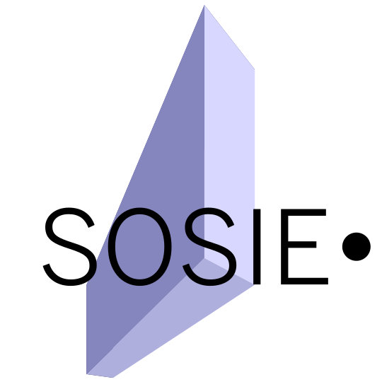

About SOSIE
SOSIE is a tool that allows fast and high-quality 2D and 3D interpolation of geophysical fields from a gridded domain to another. "Sosie" is the french word for "doppelganger". SOSIE is developed and distributed under the GNU General Public License (GPL).
SOSIE was originally intended to interpolate geophysical fields onto the ORCA family of tri-polar grids on which the NEMO global ocean general circulation model is run (so-called ORCA grid). It now supports a wide range of source/target grid configuration for scalar fields interpolation but vector rotation in distorted target grid regions is only supported for the ORCA grids so far.
The main interpolation algorithm of SOSIE is based on the method of Akima (1970): "A New Method of Interpolation and Smooth Surface Fitting Based On Local Procedures, J.of Applied Comput. Math., 17, 589-602." In SOSIE, this method has been coded from scratch in plain Fortran-90. The algorithm is made highly efficient by skipping solving a 16x16 linear system for each treated point of the target grid. Instead, a particularly efficient way to calculate the general solution of the 16x16 system was found (J.M. Brankart, personal communication).
Compared to more widely used interpolation methods such as bilinear or bicubic splines, the Akima method allows, at an extremely low numerical cost, continuous and smooth interpolated fields without errors related to overshoots (as for polynomial functions, see 1D illustrations below).
SOSIE can perform 3D interpolation. This is fake 3D interpolation though: each level is independently interpolated on the target horizontal domain and vertical interpolation (using Akima 1D algorithm) is then performed. SOSIE uses Netcdf as IO file format.
Authors and main developers: Laurent Brodeau, Maxime Ballarotta, Jean-Michel Brankart, Raphael Dussin, Jean-Marc Molines, Saeed Falahat and Pierre Mathiot.
The official SOSIE development is now hosted on GitHub
SOSIE is a tool that allows fast and high-quality 2D and 3D interpolation of geophysical fields from a gridded domain to another. "Sosie" is the french word for "doppelganger". SOSIE is developed and distributed under the GNU General Public License (GPL).
SOSIE was originally intended to interpolate geophysical fields onto the ORCA family of tri-polar grids on which the NEMO global ocean general circulation model is run (so-called ORCA grid). It now supports a wide range of source/target grid configuration for scalar fields interpolation but vector rotation in distorted target grid regions is only supported for the ORCA grids so far.
The main interpolation algorithm of SOSIE is based on the method of Akima (1970): "A New Method of Interpolation and Smooth Surface Fitting Based On Local Procedures, J.of Applied Comput. Math., 17, 589-602." In SOSIE, this method has been coded from scratch in plain Fortran-90. The algorithm is made highly efficient by skipping solving a 16x16 linear system for each treated point of the target grid. Instead, a particularly efficient way to calculate the general solution of the 16x16 system was found (J.M. Brankart, personal communication).
Compared to more widely used interpolation methods such as bilinear or bicubic splines, the Akima method allows, at an extremely low numerical cost, continuous and smooth interpolated fields without errors related to overshoots (as for polynomial functions, see 1D illustrations below).
SOSIE can perform 3D interpolation. This is fake 3D interpolation though: each level is independently interpolated on the target horizontal domain and vertical interpolation (using Akima 1D algorithm) is then performed. SOSIE uses Netcdf as IO file format.
Authors and main developers: Laurent Brodeau, Maxime Ballarotta, Jean-Michel Brankart, Raphael Dussin, Jean-Marc Molines, Saeed Falahat and Pierre Mathiot.
The official SOSIE development is now hosted on GitHub
Limitation of the Akima method
The Akima algorithm can only be used for interpolating fields mapped on non-distorted horizontal grids, i.e. on so-called lat-lon regular domains in which latitude and longitude arrays are 1D and depend only on x and y, respectively. A bilinear interpolation alternative is included in SOSIE and can be used for distorted input domains. However, there is no limitation regarding the type of the target grid: both regular and distorted target grids are supported by the Akima method.
The Akima algorithm can only be used for interpolating fields mapped on non-distorted horizontal grids, i.e. on so-called lat-lon regular domains in which latitude and longitude arrays are 1D and depend only on x and y, respectively. A bilinear interpolation alternative is included in SOSIE and can be used for distorted input domains. However, there is no limitation regarding the type of the target grid: both regular and distorted target grids are supported by the Akima method.
Illustration 1D
Fig. 1-2: Comparison between the Akima method coded in
SOSIE and the widely-used cubic spline method (from Matlab), for two
different "discontinuous" patterns of input (x,y) points.
Illustration 2D
In this first example, the mean long term sea surface temperature of Reynolds (2002) is interpolated from a spherical input lat-lon grid (360x180) to the tri-polar ORCA1 (distorted) grid. This example is provided as a template configuration (example #1) in the SOSIE package, see the "A few examples" section.
In the following example, a random SST snapshot from a random NEMO-ORCA1 simulation is interpolated with the SOSIE bi-linear algorithm from the tri-polar ORCA1 (distorted) grid to a spherical output lat-lon grid auto-generated by SOSIE (1x1 degree). This example is provided as a template configuration (example #3) in the SOSIE package, see the "A few examples" section. This example also illustrates the action of the DROWN algorithm, used to extrapolate sea values over continents (see Fig. 6)
In this first example, the mean long term sea surface temperature of Reynolds (2002) is interpolated from a spherical input lat-lon grid (360x180) to the tri-polar ORCA1 (distorted) grid. This example is provided as a template configuration (example #1) in the SOSIE package, see the "A few examples" section.
Fig. 3: March mean SST (Reynolds, 2002), original regular lat-lon grid (360x180).
Fig. 4: March mean SST (Reynolds, 2002), interpolated on the
tri-polar ORCA1 grid using the Akima method
In the following example, a random SST snapshot from a random NEMO-ORCA1 simulation is interpolated with the SOSIE bi-linear algorithm from the tri-polar ORCA1 (distorted) grid to a spherical output lat-lon grid auto-generated by SOSIE (1x1 degree). This example is provided as a template configuration (example #3) in the SOSIE package, see the "A few examples" section. This example also illustrates the action of the DROWN algorithm, used to extrapolate sea values over continents (see Fig. 6)
Fig. 5: Random NEMO-ORCA1 SST snapshot, on its original ORCA1
grid. Note that not all iso-longitudes and -latitudes are
represented for clarity.
Fig. 6: Random NEMO-ORCA1 SST snapshot, interpolated on a regular 1x1 degree
lat-lon grid with the bilinear method
Obtaining SOSIE
Up to date development version of SOSIE can be installed via Git or Subversion from GitHub:
Up to date development version of SOSIE can be installed via Git or Subversion from GitHub:
https://github.com/brodeau/sosie
Using SOSIE
Once you have read the README file and compiled the executable, you simply need to configure everything into a Fortran namelist. A well-documented template namelist is provided (template.namelist).
Once you have read the README file and compiled the executable, you simply need to configure everything into a Fortran namelist. A well-documented template namelist is provided (template.namelist).
A few examples
Into the "examples" sub-directory you will find a collection of namelists and Netcdf files to test SOSIE for different kinds of setups. For each example you will find a commented and working namelist (namelist.exampleX) detailing the relevant namelist tuning.
We encourage you to use a software like ncview to visualize files to be interpolated and interpolated files.
The common approach to test a given example (# X):
• Example #1: basic 2D scalar field interpolation
Interpolation of Reynolds (2002) Long Term Mean SST onto the ORCA1 grid (illustrated on Fig. 3-4).
Do the interpolation:
• Example #2: 3D scalar field interpolation
3D interpolation of Levitus (1998) temperature climatology onto the ORCA1 grid (only march).
• Example #3: Interpolation from an irregular (ORCA1) to a regular lat-lon 1x1 deg. grid
2D interpolation of a SST snapshot from a random NEMO-ORCA1 simulation onto lat-lon 1x1 deg. grid using the bilinear algorithm (illustrated on Fig. 5-6).
• Example #4: Interpolation and correction of a 2D vector field from a regular lat-lon 1x1 deg. grid to an irregular grid (ORCA1)
As the ORCA family of grids gets distorted in the northern hemisphere it is necessary to correct (i.e. rotate) both components of the vector. In this example the input vector field is the wind at 10 from a few 6-hourly snapshots of the ERA-INTERIM re-analysis.
Do the "raw" interpolation for the zonal component of the wind:
• Example #5: 2D regular lat-lon to polar stereographic
Interpolation of high-resolution surface 2-meter air temperature from ECMWF onto a polar stereographic projection of the Arctic.
Do the interpolation:
• Example #6: 3D interpolation from ORCA2 to ORCA1 tri-polar grids
Interpolation of a random 3D+time monthly salinity field on the ORCA2 grid to the ORCA1 grid using the bilinear method.
Do the interpolation:
Into the "examples" sub-directory you will find a collection of namelists and Netcdf files to test SOSIE for different kinds of setups. For each example you will find a commented and working namelist (namelist.exampleX) detailing the relevant namelist tuning.
We encourage you to use a software like ncview to visualize files to be interpolated and interpolated files.
The common approach to test a given example (# X):
>> cd examples/
>> tar zxvf data.tar.gz
>> sosie.x -f namelist.exampleX
• Example #1: basic 2D scalar field interpolation
Interpolation of Reynolds (2002) Long Term Mean SST onto the ORCA1 grid (illustrated on Fig. 3-4).
Do the interpolation:
>> sosie.x -f namelist.example1
• Example #2: 3D scalar field interpolation
3D interpolation of Levitus (1998) temperature climatology onto the ORCA1 grid (only march).
>> sosie.x -f namelist.example2
• Example #3: Interpolation from an irregular (ORCA1) to a regular lat-lon 1x1 deg. grid
2D interpolation of a SST snapshot from a random NEMO-ORCA1 simulation onto lat-lon 1x1 deg. grid using the bilinear algorithm (illustrated on Fig. 5-6).
>> sosie.x -f namelist.example3
• Example #4: Interpolation and correction of a 2D vector field from a regular lat-lon 1x1 deg. grid to an irregular grid (ORCA1)
As the ORCA family of grids gets distorted in the northern hemisphere it is necessary to correct (i.e. rotate) both components of the vector. In this example the input vector field is the wind at 10 from a few 6-hourly snapshots of the ERA-INTERIM re-analysis.
Do the "raw" interpolation for the zonal component of the wind:
>> sosie.x -f namelist.example4_x
>> sosie.x -f namelist.example4_y
>> corr_vect.x -x u10 -y v10 -G T -f namelist.example4_x -m data/mesh_mask_ORCA1_light.nc
• Example #5: 2D regular lat-lon to polar stereographic
Interpolation of high-resolution surface 2-meter air temperature from ECMWF onto a polar stereographic projection of the Arctic.
Do the interpolation:
>> sosie.x -f namelist.example5
• Example #6: 3D interpolation from ORCA2 to ORCA1 tri-polar grids
Interpolation of a random 3D+time monthly salinity field on the ORCA2 grid to the ORCA1 grid using the bilinear method.
Do the interpolation:
>> sosie.x -f namelist.example6
Last edited by Laurent Brodeau, 2016/05/20